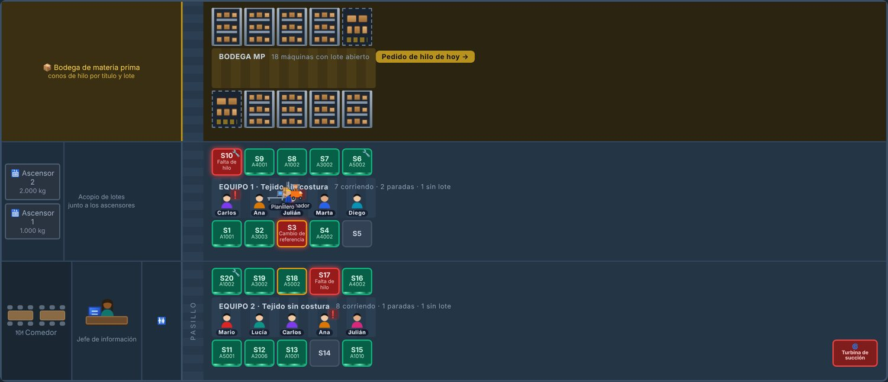
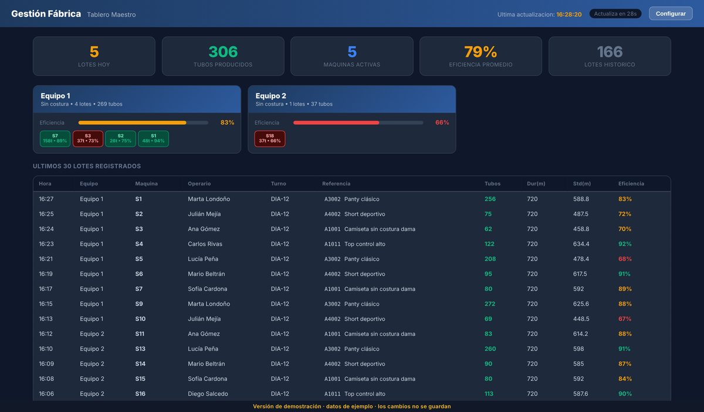
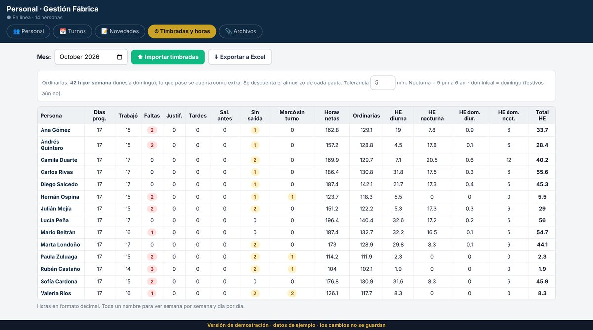
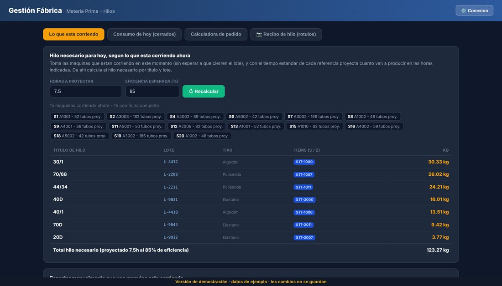
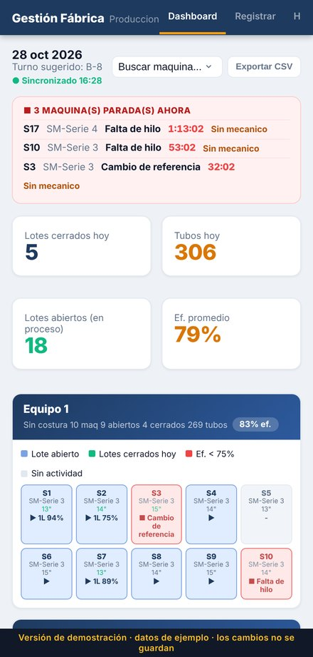

<title>Gestión Fábrica</title>
<meta name="claude:viewport-fit-sides" content="cover">
<link rel="preconnect" href="https://fonts.googleapis.com">
<link rel="preconnect" href="https://fonts.gstatic.com" crossorigin>
<link rel="stylesheet" href="https://fonts.googleapis.com/css2?family=Saira+Condensed:wght@500;600;700&family=IBM+Plex+Mono:wght@400;600&family=IBM+Plex+Sans:wght@400;500;600&display=swap">
<style>
/* Layout: una línea de producción vertical; cada sección es una estación con su etiqueta en mono */
:root{
  --tinta:#101a24;          /* texto principal */
  --tinta-2:#4d6072;        /* texto secundario */
  --papel:#f4f6f8;          /* fondo */
  --papel-2:#ffffff;        /* superficies */
  --banda:#0f2942;          /* franjas oscuras: iguales en los dos temas */
  --banda-fg:#eef3f8;
  --laton:#b8921e;          /* acento: latón */
  --linea:#d8dee4;
  --verde:#0f7a4d;
  --rojo:#b91c1c;
  --display:'Saira Condensed','Arial Narrow',system-ui,sans-serif;
  --cuerpo:'IBM Plex Sans',system-ui,-apple-system,'Segoe UI',sans-serif;
  --mono:'IBM Plex Mono',ui-monospace,'Courier New',monospace;
  color-scheme:light;
}
@media (prefers-color-scheme:dark){:root:not([data-theme="light"]){
  --tinta:#e8eef4;--tinta-2:#9bb0c3;--papel:#0b141d;--papel-2:#122030;
  --laton:#d8b03c;--linea:#22384d;--verde:#34d399;--rojo:#f87171;color-scheme:dark}}
:root[data-theme="dark"]{
  --tinta:#e8eef4;--tinta-2:#9bb0c3;--papel:#0b141d;--papel-2:#122030;
  --laton:#d8b03c;--linea:#22384d;--verde:#34d399;--rojo:#f87171;color-scheme:dark}

*{box-sizing:border-box}
body{margin:0;background:var(--papel);color:var(--tinta);font-family:var(--cuerpo);font-size:16px;line-height:1.6;-webkit-font-smoothing:antialiased}
.w{width:100%;max-width:1060px;margin-inline:auto;padding-left:max(16px,env(safe-area-inset-left,0px));padding-right:max(16px,env(safe-area-inset-right,0px))}
h1,h2,h3{font-family:var(--display);font-weight:700;line-height:1.02;letter-spacing:.005em;text-wrap:balance;margin:0}
p{margin:0}
a{color:inherit}
.eyebrow{font-family:var(--mono);font-size:11.5px;letter-spacing:.16em;text-transform:uppercase;color:var(--laton);font-weight:600}

/* ── Portada ── */
.hero{background:var(--banda);color:var(--banda-fg);padding-block:clamp(44px,8vw,78px) clamp(40px,7vw,66px);position:relative;overflow:hidden}
.hero::after{content:"";position:absolute;inset:auto 0 0 0;height:4px;background:repeating-linear-gradient(90deg,var(--laton) 0 42px,transparent 42px 70px)}
.marca{display:flex;align-items:center;gap:11px;margin-bottom:30px}
.marca i{width:30px;height:30px;border:2.5px solid var(--laton);border-radius:4px;display:grid;place-items:center;flex:none}
.marca i::before{content:"";width:9px;height:9px;background:var(--laton);border-radius:1px}
.marca b{font-family:var(--display);font-size:21px;letter-spacing:.07em;text-transform:uppercase}
.hero h1{font-size:clamp(38px,7.4vw,70px);max-width:15ch;text-transform:uppercase}
.hero h1 em{font-style:normal;color:var(--laton)}
.hero .bajada{margin-top:20px;max-width:56ch;font-size:clamp(16px,2.1vw,19px);opacity:.88}
.ctas{display:flex;flex-wrap:wrap;gap:12px;margin-top:32px}
.btn{display:inline-flex;align-items:center;gap:9px;padding:14px 24px;border-radius:7px;font-weight:600;font-size:15.5px;text-decoration:none;border:2px solid transparent;transition:transform .12s ease}
.btn:hover{transform:translateY(-1px)}
.btn-1{background:var(--laton);color:#16120a}
.btn-2{border-color:currentColor;opacity:.9}
.nota-demo{margin-top:16px;font-family:var(--mono);font-size:12px;opacity:.68}

/* ── Franjas ── */
section{padding-block:clamp(46px,7vw,74px)}
section.alt{background:var(--papel-2);border-block:1px solid var(--linea)}
.enc{display:flex;flex-direction:column;gap:9px;margin-bottom:34px;max-width:62ch}
.enc h2{font-size:clamp(27px,4.1vw,38px);text-transform:uppercase}
.enc p{color:var(--tinta-2);font-size:16.5px}

/* ── Problema ── */
.dolores{display:grid;grid-template-columns:repeat(auto-fit,minmax(250px,1fr));gap:1px;background:var(--linea);border:1px solid var(--linea);border-radius:10px;overflow:hidden}
.dolor{background:var(--papel-2);padding:22px 20px;min-width:0}
.dolor b{display:block;font-family:var(--display);font-size:19px;margin-bottom:5px}
.dolor span{color:var(--tinta-2);font-size:14.6px;line-height:1.55;display:block}

/* ── Módulos ── */
.mods{display:grid;grid-template-columns:repeat(auto-fit,minmax(252px,1fr));gap:14px}
.mod{background:var(--papel-2);border:1px solid var(--linea);border-left:4px solid var(--laton);border-radius:8px;padding:18px 18px 19px;min-width:0}
.mod h3{font-size:19.5px;margin-bottom:6px}
.mod p{font-size:14.6px;color:var(--tinta-2);line-height:1.55}
.mod .tag{font-family:var(--mono);font-size:10.5px;letter-spacing:.1em;text-transform:uppercase;color:var(--tinta-2);display:block;margin-bottom:7px}

/* ── Pantallas ── */
.shot{border:1px solid var(--linea);border-radius:10px;overflow:hidden;background:var(--papel-2);box-shadow:0 1px 2px rgba(16,26,36,.06)}
.shot img{display:block;width:100%;max-width:100%;height:auto}
.shot figcaption{padding:13px 17px;font-size:14.4px;color:var(--tinta-2);border-top:1px solid var(--linea)}
.shot figcaption b{color:var(--tinta);font-family:var(--display);font-size:17px;display:block;margin-bottom:2px;font-weight:600}
.duo{display:grid;grid-template-columns:repeat(auto-fit,minmax(310px,1fr));gap:18px;margin-top:18px}
.movil{display:grid;grid-template-columns:minmax(0,1fr) minmax(220px,300px);gap:28px;align-items:center;margin-top:18px}
.movil .shot img{max-height:620px;object-fit:contain;background:#0b141d}
@media (max-width:640px){.movil{grid-template-columns:1fr}}

/* ── Fases ── */
.fases{display:grid;gap:0;counter-reset:f}
.fase{display:grid;grid-template-columns:52px 1fr;gap:18px;padding:19px 0;border-top:1px solid var(--linea);align-items:start}
.fase:last-child{border-bottom:1px solid var(--linea)}
.fase .n{font-family:var(--mono);font-size:13px;color:var(--laton);font-weight:600;padding-top:3px}
.fase b{font-family:var(--display);font-size:21px;display:block;margin-bottom:3px}
.fase span{color:var(--tinta-2);font-size:15px}

/* ── Requisitos ── */
.reqs{display:flex;flex-wrap:wrap;gap:10px}
.req{background:var(--papel-2);border:1px solid var(--linea);border-radius:999px;padding:9px 17px;font-size:14.5px}
.req b{font-weight:600}

/* ── Cierre ── */
.cierre{background:var(--banda);color:var(--banda-fg);padding-block:clamp(44px,7vw,70px)}
.cierre h2{font-size:clamp(28px,4.6vw,44px);text-transform:uppercase;max-width:18ch}
.contacto{display:flex;flex-wrap:wrap;gap:26px 44px;margin-top:30px}
.contacto div{min-width:0}
.contacto .et{font-family:var(--mono);font-size:11px;letter-spacing:.14em;text-transform:uppercase;opacity:.62;display:block;margin-bottom:4px}
.contacto .vl{font-size:17.5px;font-weight:600;word-break:break-word}
footer{padding-block:26px;font-family:var(--mono);font-size:11.5px;color:var(--tinta-2);text-align:center}
@media (prefers-reduced-motion:reduce){*{transition:none!important}}
</style>

<header class="hero">
  <div class="w">
    <div class="marca"><i></i><b>Gestión Fábrica</b></div>
    <h1>La planta de tejido, <em>en una sola pantalla</em></h1>
    <p class="bajada">Producción por máquina, paros, eficiencia, pedido de hilo, hojas de vida y personal. Lo que hoy vive en planillas de papel y archivos de Excel, al día y en el mismo lugar.</p>
    <div class="ctas">
      <a class="btn btn-1" href="https://dp522-ops.github.io/gestion-fabrica/" target="_blank" rel="noopener">Entrar a la demostración →</a>
      <a class="btn btn-2" href="#contacto">Agendar una visita</a>
    </div>
    <p class="nota-demo">Demostración abierta, con una planta de ejemplo de 20 máquinas. Puede tocar todo: no daña nada.</p>
  </div>
</header>

<section>
  <div class="w">
    <div class="enc">
      <span class="eyebrow">El punto de partida</span>
      <h2>Lo que pasa hoy en la mayoría de las plantas</h2>
      <p>Nada de esto es por descuido. Es que la información se escribe a mano, se digita después y para cuando alguien la lee ya pasó el turno.</p>
    </div>
    <div class="dolores">
      <div class="dolor"><b>La eficiencia se sabe tarde</b><span>El operario anota en la planilla, alguien la digita al otro día y el dato llega cuando ya no se puede hacer nada.</span></div>
      <div class="dolor"><b>Los paros no quedan registrados</b><span>Se sabe que la máquina paró, pero no cuánto tiempo ni por qué. Sin eso no hay nada que mejorar.</span></div>
      <div class="dolor"><b>El hilo se pide por experiencia</b><span>Materia prima despacha de más o de menos porque el cálculo real sale de la ficha, y hacerlo a mano para toda la planta no es práctico.</span></div>
      <div class="dolor"><b>El mantenimiento no tiene historia</b><span>El mecánico sabe lo que le hizo a la máquina, pero solo él. Cuando se va, se va el conocimiento.</span></div>
      <div class="dolor"><b>Las horas extras se liquidan a pulso</b><span>Cruzar el reporte del reloj con la lista de turnos, persona por persona, es un día entero de trabajo cada quincena.</span></div>
      <div class="dolor"><b>Nadie ve la planta completa</b><span>Para saber cómo va el turno hay que recorrer los pasillos y preguntar máquina por máquina.</span></div>
    </div>
  </div>
</section>

<section class="alt">
  <div class="w">
    <div class="enc">
      <span class="eyebrow">Qué incluye</span>
      <h2>Diez módulos que trabajan con los mismos datos</h2>
      <p>El operario registra una sola vez, desde el celular. De ahí sale todo lo demás: el tablero, el pedido de hilo, la planeación y el cálculo de horas.</p>
    </div>
    <div class="mods">
      <div class="mod"><span class="tag">Operarios</span><h3>Producción diaria</h3><p>Abrir y cerrar lotes, registrar paros con su motivo y entregar el turno. Desde el celular, al lado de la máquina.</p></div>
      <div class="mod"><span class="tag">Supervisión</span><h3>Tablero maestro</h3><p>Lotes, tubos y eficiencia del día por equipo y por máquina, actualizado solo.</p></div>
      <div class="mod"><span class="tag">Supervisión</span><h3>Planta virtual</h3><p>El plano real de la planta: qué máquina corre, cuál está parada y con qué referencia, sin levantarse del escritorio.</p></div>
      <div class="mod"><span class="tag">Mecánica</span><h3>Hojas de vida de máquinas</h3><p>Mantenimientos, cambios de elementos y fotos del estado. El mecánico lo registra en segundos desde el celular.</p></div>
      <div class="mod"><span class="tag">Gestión humana</span><h3>Personal</h3><p>Hojas de vida, turnos que rotan solos, novedades, incapacidades y documentos escaneados.</p></div>
      <div class="mod"><span class="tag">Gestión humana</span><h3>Timbradas y horas</h3><p>Se importa el reporte del reloj y se cruza con los turnos: faltas, llegadas tarde y horas extras separadas en diurna, nocturna y dominical.</p></div>
      <div class="mod"><span class="tag">Materia prima</span><h3>Pedido de hilo</h3><p>Según lo que está montado ahora, calcula los kilos por título y lote. Puede salir por correo todos los días a la misma hora.</p></div>
      <div class="mod"><span class="tag">Ingeniería</span><h3>Fichas técnicas</h3><p>Composición de hilo, peso y tiempo estándar por referencia. Es la base de los otros cálculos.</p></div>
      <div class="mod"><span class="tag">Planeación</span><h3>Programa de producción</h3><p>Qué máquina corre cada referencia y hasta cuándo, con lo que de verdad está pasando en planta.</p></div>
      <div class="mod"><span class="tag">Desarrollo</span><h3>Producto nuevo</h3><p>Seguimiento de cada referencia nueva por etapa, de diseño hasta aprobación de gerencia.</p></div>
    </div>
  </div>
</section>

<section>
  <div class="w">
    <div class="enc">
      <span class="eyebrow">Cómo se ve</span>
      <h2>La planta completa, en vivo</h2>
      <p>Cada cuadro es una máquina. Verde corriendo, rojo parada con su motivo, gris sin lote. El plano se arma con la distribución real de cada planta.</p>
    </div>
    <figure class="shot">
      
      <figcaption><b>Planta virtual</b>Los operarios aparecen frente a sus máquinas, el enconador lleva la materia prima y el planillero recoge los lotes que se cierran.</figcaption>
    </figure>
    <div class="duo">
      <figure class="shot">
        
        <figcaption><b>Tablero maestro</b>Lo del día por equipo y por máquina, sin pedirle el dato a nadie.</figcaption>
      </figure>
      <figure class="shot">
        
        <figcaption><b>Timbradas y horas extras</b>El reporte del reloj cruzado con los turnos de cada persona.</figcaption>
      </figure>
    </div>
    <div class="movil">
      <figure class="shot">
        
        <figcaption><b>Pedido de hilo</b>Los kilos por título y lote salen de las fichas y de lo que está montado en este momento.</figcaption>
      </figure>
      <figure class="shot">
        
        <figcaption><b>En el celular</b>Lo que usa el operario en planta.</figcaption>
      </figure>
    </div>
  </div>
</section>

<section class="alt">
  <div class="w">
    <div class="enc">
      <span class="eyebrow">Puesta en marcha</span>
      <h2>De la primera visita a la planta andando</h2>
      <p>Se configura con las máquinas, referencias y turnos de cada planta. No es un sistema genérico al que haya que amoldarse.</p>
    </div>
    <div class="fases">
      <div class="fase"><span class="n">01</span><div><b>Levantamiento</b><span>Una visita para ver la distribución real, las máquinas, los equipos y cómo se trabaja hoy.</span></div></div>
      <div class="fase"><span class="n">02</span><div><b>Configuración</b><span>Se cargan máquinas, referencias con su composición de hilo, operarios, turnos y motivos de paro propios de la planta.</span></div></div>
      <div class="fase"><span class="n">03</span><div><b>Piloto en un equipo</b><span>Arranca un solo equipo durante dos o tres semanas. Se ajusta con los operarios antes de abrirlo a toda la planta.</span></div></div>
      <div class="fase"><span class="n">04</span><div><b>Planta completa</b><span>Se abre al resto de los equipos, con acompañamiento y los ajustes que vayan saliendo.</span></div></div>
    </div>
  </div>
</section>

<section>
  <div class="w">
    <div class="enc">
      <span class="eyebrow">Qué hace falta</span>
      <h2>No hay que comprar servidores</h2>
      <p>Funciona en el navegador, en los equipos que la planta ya tiene.</p>
    </div>
    <div class="reqs">
      <span class="req"><b>Un celular o tablet</b> por equipo de máquinas</span>
      <span class="req"><b>Internet</b> en la planta</span>
      <span class="req">Un <b>computador</b> para supervisión y oficina</span>
      <span class="req">Sin instalar nada: <b>se abre en el navegador</b></span>
      <span class="req">Sigue registrando <b>sin señal</b> y sincroniza al volver</span>
    </div>
  </div>
</section>

<section class="cierre" id="contacto">
  <div class="w">
    <span class="eyebrow">Hablemos</span>
    <h2 style="margin-top:9px">Una visita a su planta y le muestro cómo quedaría</h2>
    <div class="contacto">
      <div><span class="et">Responsable</span><span class="vl">David Posada</span></div>
      <div><span class="et">Correo</span><span class="vl">jdposada33@gmail.com</span></div>
      <div><span class="et">Demostración</span><span class="vl">dp522-ops.github.io/gestion-fabrica</span></div>
    </div>
  </div>
</section>

<footer class="w">Gestión Fábrica · Sistema de gestión para plantas de tejido</footer>
